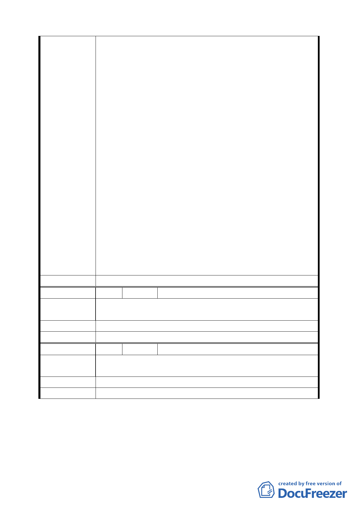

一、由 貴委員會以「提升台北市的國際知名度，再創【大
橋頭】的繁榮」的主題，邀請一些知名的建築師來設計
這個開發案，開發案可以結合圓環、延平北路一二段（太
平通）、媽祖廟、延平北路三段夜市、天師宮（可延伸到
孔廟、保安宮）、污水處理廠、迪化街商圈、城隍廟、大
稻埕碼頭、河邊公園，開發一個可以探訪古蹟、悠遊淡
水河、參觀污水處理廠（瞭解台北市污水下水道處理及
環境綠化情形）、太平通、迪化街 SHOPPING、累了可以
在河邊公園休息觀賞淡水河夕陽、餓了可以在圓環或延
三夜市品嚐美食等，多麼高品味的觀光旅遊賣點，配合
建
議
辦
法
捷運新莊線的完成，這個開發案有無限的商機。
二、居民最關心的是開發案本身的建築是幾層樓？幾個車
位？居民可以分配到多少？改建期間商家能得到多少營
業補償？純住家的居民能得到多少租屋補償？建築師要
將這個因素融入設計裡，儘可能讓居民得到較優惠的條
件。
三、有第一項的誘因，應該有很多建設公司願意投入，開發
案成功的機率很高，如果開發案成功，「台北市」的國際
知名可以提升，又可帶動「大橋頭」甚至整個「大稻埕」
再度繁榮起來，居民的環境大大改善且得到較優惠的分
配條件，營建單位也可能獲得相當的利潤，這是難得的
「台北市政府、大橋頭居民、營建單位」三贏情況。
委 員 會 決 議 同編號 1。
編 號 51 陳情人 陳好樣（延平北路三段 17 巷 6 號）
陳
情
理
由
一、住戶分配太少。
二、住戶分配權利資料欠周詳。
建 議 辦 法 堅決反對聯合開發。
委 員 會 決 議 同編號 1。
編 號 52 陳情人 鐘雲霞（延平北路三段 17 巷 16 號 1 樓）
陳
情
理
由
建商分配比率過高應建商 40％地主 60％而且一樓價錢比二
樓貴 1／3 分配比率一樣也很不公平。
建 議 辦 法 一樓應多分 15 坪－20 坪或是二個停車位。
委 員 會 決 議 同編號 1。
討論事項三
案名：擬定臺北市捷運系統新莊線（北市段）大橋國小站聯合開
發區（捷）細部計畫案
二〇